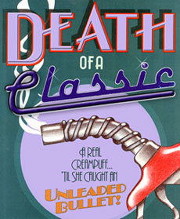

Lead. It's a word you'll probably be hearing a lot over the next few years, because the Environmental Protection Agency (EPA) has launched a major campaign to ban its use in all gasoline motor fuels. But before that federal agency is successful in its effort, you might want to be aware of some facts that could affect you more directly than you might think.
Technically speaking, the "lead" in question is actually tetraethyl lead (TEL), a tox ic, oily compound developed in 1922 as an antiknock additive. At that time, before petroleum refining processes were perfected, the addition of lead increased gasoline's octane rating-its measure of resistance to harmful detonation-from somewhere around 50 to about 75. Modern gasoline, prior to the introduction of lead, has an average octane number in the mid-80s; adding just a teaspoonful of TEL to every gallon raises that figure by about six points, enough to satisfy the needs of nearly all automobile engines.
Unfortunately, the unchecked use of lead in motor fuel has taken its toll. In part, the steady development of efficient, high-compression engines in the two decades from the early 1950s to 1970 reflected the proportional increase in the amount of TEL used during that period. More significantly, the explosive growth in the world's use of automobiles since World War II from just over 50 million vehicles in 1950 to well over 300 million today-has played a major role in the poisoning of our environment.
The fact that high levels of lead contamination have an adverse effect on human health has never been questioned. But more recent evidence suggests that levels of lead concentration in the blood lower than that previously thought dangerous may have some effects as well. Additionally, studies conducted by the EPA and several other institutions show a direct correlation between the total amount of lead used in gasoline and the blood-lead levels of both children and adults.
In her time she must have been an eyeful. Two-tone paint like a picture postcard from paradise. Just the right amount of chrome in just the right places. And an interior you could set up housekeeping in and not mind at all.
You get the picture. A dreamboat.
But that was before.
Not tonight. Tonight she sat motionless on the shoulder and didn't notice the rain doing a soft-shoe on her ragtop. She didn't care that her owner sat sobbing quietly in her Naugahyde lap. She didn't even mind that her hood was lifted to reveal the steaming, dripping, smoking hunk of junk that used to be her heart. Tonight you could sum up how she looked in a single word.
Dead.
Lead exposure is measured in micrograms per deciliter of blood (pg/dl); the CDC recently lowered its definition of lead toxicity from a blood-lead level of 30 µg/dl to one of 25 µg/dl. Even so, a number of effects have been -detected at blood-lead levels as low as 10 to 15 µg/dl. These include a restriction in the synthesis of heme (an element critical to the formation of hemoglobin and certain detoxifying liver enzymes), a change in brainwave patterns, and an inhibition of vitamin D metabolism (which is necessary to the normal growth and development of children).
Equally incriminating is the relationship between lead use in fuel and lead concentration in humans: Between 1976 and 1980, the amount of TEL used in gasoline production dropped from just over 100 thousand tons per six months to a low of about 48 thousand tons per half-year. In that four-year period, average bloodlead levels declined at a similar rate, from 16 µg/dl to 9.6; more significantly, the trends followed each other closely and even matched seasonal fluctuations. Currently, the EPA maintains that leaded gasoline is responsible for 80% to 90% of all airborne lead emissions. If that figure is accurate, motor fuel accounts for over half a child's, and about one-third of an adult's, "baseline" exposure to lead . . . a term used to indicate the level encountered in a typical rural area, removed from the urban sources of lead pollution.
Recognizing the problem of lead in our environment, the EPA, in December of 1973, proposed a five-step lead phasedown program that would have limited the use of TEL to 0.5 grams per total gallon by January of 1979, down from the then-current average of 2.5 grams per gallon. The agency actually sowed the seeds of change as early as 1970 in an effort to prepare both the petroleum industry and the automobile manufacturers for the eventual switch to unleaded fuels.
The record shows that the lead reduction program has indeed reduced harmful emissions . . . but it's been an uphill battle, and it's far from over. No sooner was the program under way than it received a setback from the energy crisis of the mid-1970s; since the petroleum industry uses TEL to coax a greater volume of highoctane gasoline from each barrel of oil, the EPA rulings were seen as a significant kink in the hose of progress. To compound the problem, a number of small refineries that dealt mainly in the production of leaded fuels-in concert with the Ethyl Corporation, the leading supplier of tetraethyl lead-petitioned the U.S. Court of Appeals to review the phasedown regulations.
Ultimately, the EPA extended the 1979 deadline, in part, to 1982. Early that same year, the agency also considered relaxing some of the limits on lead in gasoline . . . but stiff opposition from environmentalists and medical experts prompted it to propose even more stringent standards, which culminated in the March 1985 decision to limit the use of lead in gasoline to 0.50 grams per leaded gallon (gp/g) by July of the same year and to reduce it further to 0.10 gplg by January 1, 1986. In addition, a Notice of Proposed Rulemaking was issued soliciting comments on a to taliban of lead in gasoline by 1988.
Why the sudden reversal in direction? Obviously, public health is a major concern. But there exist some other factors that might not be so apparent. For one, the EPA had counted on a much higher attrition rate among pre-1975 leaded-fuel cars than actually came to pass. Steep new-car prices, recession, unemployment, and the additional at-the-pump cost of unleaded fuel have encouraged many auto owners to hang on to their older models, which incidentally are generally more simple and less expensive to service than new cars. The sad truth is that the EPA numbercrunchers predicted refinery lead usage in the neighborhood of 21 billion grams by 1988 . . . but recently had to revise their estimates upward by 67% to almost 38 billion grams, to bring the figures in line with the facts. Even with yesterday's egg on its face, the agency continues to maintain that by 1988 over 95% of all automobiles on the road will be those designed to use unleaded fuel.
Another closely related factor is the unprecedented incidence of fuel switching and emissions-control tampering on the part of vehicle owners. According to EPA figures, 16% of all unleaded-fuel cars are being operated on leaded gasoline. Furthermore, an estimated 28% have had a major emission-control component altered or removed.
The agency's concern, of course, stems from the fact that the platinum-palladium catalysts used in the exhaust systems of 1975 and-newer automobiles to transform the bulk of harmful emissions into inert gases will be rendered ineffective if forced to handle several tankfuls of leaded fuel. No federal law prohibits private individuals from switching motor fuels, and the 40 states that do have such regulations find them nearly impossible to enforce. To add insult to injury, some of the perpetrators of the crime could well be among those enlisted to prevent it: Not too long ago, the Philadelphia police force was fined $300,000 for tampering with its fleet's emis sion-control equipment and tanking up with leaded fuel.
Few could deny the EPA's noble effort to reduce airborne lead contamination . . . but that may be only because there are a couple of stones left unturned. Earlier, it was noted that the development of tetraethyl lead paved the way for the introduction of high-octane fuels. Subsequently, engineers took advantage of the potent blend to develop powerplants that were successively lighter in weight and more efficient, and which utilized high-compression, advanced-combustion chamber design and improvements in metallurgy to squeeze an unprecedented amount of power from a gallon of gasoline.
Lead, you'll remember, is the ultimate antiknock compound. But it also happens to be the best valve-seat lubricant around. An engine operated at even moderate highway speeds is subjected to severe valve-component stress. At high RPM, the exhaust valves are being hurled against their cast-iron seats at a rate of several hundred times per minute, in an environment of tremendous temperature. With insufficient quantities of lead in the fuel, the two surfaces become microscopically and instantaneously welded together, only to be torn apart just as rapidly. Eventually-in as few as several thousand miles of freeway driving-the weaker valve seat deteriorates and recedes to the point where it provides an ineffective seal, resulting in loss of compression, degraded performance, andironically-increased hydrocarbon emissions.
By the time I showed up, O'Malley was there, leaning against the guardrail looking completely and utterly bored as he tossed a blackened chunk of metal into the air.
"That what did her in?" I asked, nodding at his plaything.
"Yep." He let it fall into his palm and pitched it to me.
I turned it over in my hand and gave it a quick once-over. A valve, charred and burned blacker than one of Fat Eddie's Biggie Burgers (two for a quarter).
"Any suspects?"
"Sure we got a suspect. You think we show up at the station just to catch up on our sleep?"
I let that one pass. Too easy. "Care to let me in on it?"
"Sorry, shamus. Not a prayer."
"OK. So don't give me a name. I'll settle for a little hint."
He took his sweet time relighting what used to be a cigar. "I feel sorry for you," he said. "I know you've got one just like her in your driveway. How about initials?"
"Sold. Give." I felt like a dog yapping after table scraps.
"EPA mean anything to you?"
Fortunately, the auto industry read the handwriting on the wall early on. Beginning in 1971, most GM vehicles were factory-equipped with induction-hardened valve seats; by 1975, essentially all cars and light trucks were made to use unleaded fuel with no ill effects.
On paper, this has all the markings of a success story. A decade has passed since auto manufacturers converted their products to burn lead-free fuel, so we can assume that the great majority of drivers operate catalyst-equipped cars. Or can we? Let's look at some figures. Statistics indicate that there are over 150 million automobiles in use in the United States today. Conservative estimates place about 10% of those in the pre-1972 model year, must-have-lead category. But even the EPA admits that, as you read this, there might be nearly 21 million vehicles on the road that require some amount of lead in their fuel . . . and other sources place the number as high as 50 million!
Where the source of this discrepancy lies is difficult to pinpoint, and perhaps can be traced to registered vehicles which aren't in use, a hidden population of antique and classic automobiles, or the inclusion of nonautomotive vehicles. But one thing is certain: The potential for economic hardship that could be inflicted upon the owners of even a "mere" 15 million suddenly inoperative vehicles is sobering, and should be considered by EPA officials along with the weighty health concerns. (Note: The environmental impact of new production to replace those cars should also be kept in mind!)
At this point, the question might not be how many vehicles will be affected, but rather what the effects may be . . . and it seems that the answer hinges upon precisely how much lead is contained in each gallon of fuel.
With regard to the major problem of valve recession, current data appear to be contradictory. In the face of industry arguments that any less than 0.20 gplg of gasoline is detrimental to valve surfaces, the EPA counters with the Doelling report, a 1971 study conducted for the Cities Service Oil Company, which indicated that lead-content levels of between 0.04 and 0.07 gplg were sufficient to stave off valve recession. Therefore, the EPA maintains that the 1986 level of 0.10 provides a sufficent margin of safety for those cars and trucks that were designed to use leaded fuel.
The agency's position, however, ignores the proposed total lead ban due as early as 1988. Others, though, have focused attention on the problems this ban could cause. According to research done within the automotive valve industry, damaging recession occurred 10 to 20 times more quickly when unleaded fuel, rather than leaded, was used in engines designed to operate with lead. In addition, other research showed that the damaging effects increased substantially as driving speeds increased from 30 mph to 45 or 55 mph. But perhaps the most convincing argument comes from Japan's Automobile Fuel Research Committee, where in four months of using unleaded fuel in conventional vehicles driven at 50 mph, tests indicated extensive damage to valve stems and seats, all within 3,000 to 5,000 miles of operation.
Even though valve-seat deterioration may be a major concern, a second specter may also have to be dealt with. With lead content substantially reduced or eliminated, detonation may become a serious problem unless suitable alternatives are developed to combat knock and preignition. Under normal driving conditions, detonation doesn't occur given a nominal engine compression ratio and an adequate octane rating. But under heavyload conditions (which could include trailertowing or even passing), the energy and heat released by sudden preignition knock can burn holes in pistons in a matter of moments.
At this writing, it doesn't seem likely that the EPA will bring to light any immediate solutions to the problems described. That responsibility seems to fall on technicians within the petroleum and automotive supply industries. To be sure, alternatives to tetraethyl lead for valve lubrication-phosphorous, sodium, or methylcyclopentadienyl manganese tricarbonyln (MMT)-are being investigated . . . but the first is more detrimental to catalysts than lead is and may have some adverse health effects as well. The remaining two seem less threatening, but their value as lubricants is still in question.
The uncertainty surrounding minimum octane requirements may not pose much of a problem, but it must be dealt with nonetheless. Refiners, caught between EPA mandates and motorists' real-life needs, have been using blending agents such as methyltertiary-butyl ethyl (MTBE), tertiary-butyl alcohol (TBA), and both methyl and ethyl alcohol (the 10% component of widely marketed gasohol) to give their products the necessary octane boost. But they argue that there's a vast difference between a blending agent, which is nothing more than a highoctane fuel, and an antiknock additive, which is a true combustion catalyst. Essentially, the concentration of blending agents might have to be 50 times greater than that of an additive such as tetraethyl lead to have the same effect . . . and that could produce an economic nightmare.
Where does all this leave the millions of motorists presently operating leaded-fuel vehicles? Let's hope not on the side of the road, staring down at what was once an engine. On the bright side, it's agreed that a vehicle burning leaded fuel over many thousands of miles has a veneer of lead built up on the valve surfaces which, under moderate driving conditions, might last more than 5,000 miles. But a half-year's worth of driving won't seem like much compensation once the party's over. Though the health hazards of lead in the environment are widely known, the economic hazards of leaving 10 or 20 million American motorists holding the bag are not . . . and the whole lead question, at this point, seems to be lacking an acceptable answer.
|
 |
|
|